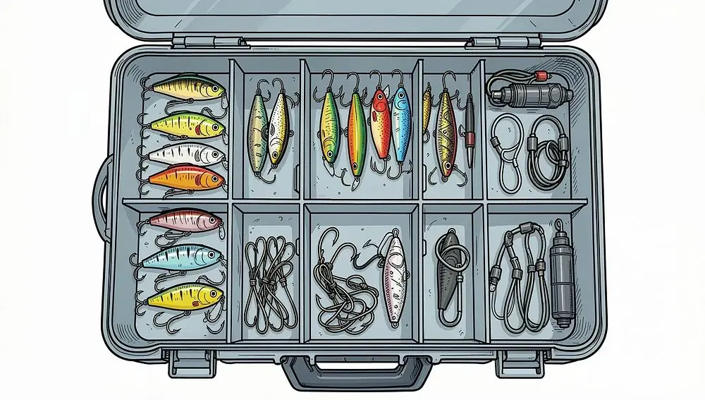
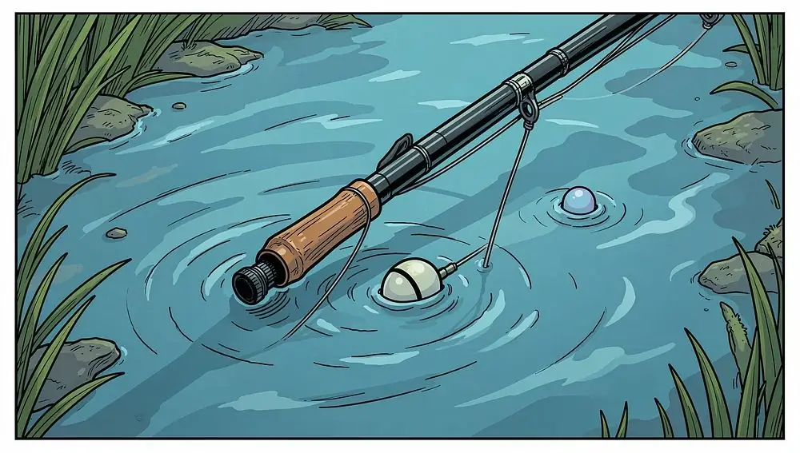
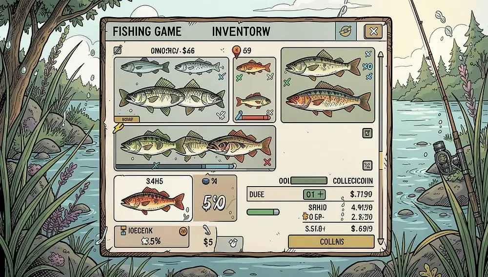

Бот для «Трофейной рыбалки 2» (Trophy Fishing 2, Steam)
Бот для Steam-версии «Трофейной рыбалки 2»: ловит на 1–3 удочки, сам ремонтирует снасти, продаёт улов и пишет вам в Telegram.
Что такое бот для «Трофейной рыбалки 2»
Бот-кликер для Steam-клиента игры Trophy Fishing 2 («Трофейная рыбалка 2»). Он берёт на себя всю рутину рыбалки: заброс, подсечку и вываживание, ремонт удочек, покупку наживки и продажу улова.
Бот работает с изображением на экране и управляет мышью, поэтому работает не в фоне. Игру запускайте в окне — бот сам выставит нужный размер.
Умеет ловить на одну, две или три удочки и присылать уведомления в Telegram — о ремонте, износе снастей и выполненной цели.
1–3 удочки
Работает с одной, двумя или тремя удочками.
Уведомления в Telegram
Сообщает о ремонте, износе и о том, что цель улова выполнена.
Только экран
Работает по изображению на экране, без изменения файлов игры.
Что умеет бот
Клик заброса
Кликает заброс в центре экрана или внизу (для режима F8).
Отпускание ЛКМ
Отпускает кнопку, когда шкала заполняется до верха или когда появляется либо заполняется треугольник (зашкаливает).
Пробел
Три режима: жать всегда, никогда не жать или кликать раз в секунду — обычно это оптимально.
Ремонт удочек
Сначала выбирает любую другую не «тёмную» удочку, потом ремонтирует ту, что ближе к верху.
Покупка наживки
Можно включить покупку наживки (осторожно с расходами) или отключить.
Продажа улова
Только за серебро, за энергию или «иногда за энергию» — если так выгоднее и энергия не превысит 1000.
Наловить и стоп
Укажите, сколько нужной рыбы поймать: бот сообщит в журнале, подаст звук и напишет в Telegram.

Как бот ловит рыбу
- Заброс. Бот кликает заброс в выбранном месте экрана.
- Подсечка и вываживание. Отпускает ЛКМ по шкале или треугольнику и жмёт пробел в выбранном режиме.
- Обслуживание. Ремонтирует удочки и при необходимости покупает наживку.
- Продажа и цель. Продаёт улов выгодным способом; набрав нужную рыбу — останавливается и пишет в Telegram.

Как скачать и запустить
- Скачайте архив в теме бота во ВКонтакте (ссылка в первом сообщении).
- Распакуйте архив, пароль 1234.
- Запустите Trophy Fishing 2 из Steam в окне.
- Запустите бота — он сам выставит размер окна. Выберите настройки и нажмите старт.

Полная лицензия
Если бот понравился в тестовом режиме, оформите полную лицензию — она поддержит разработку и откроет все функции без ограничений. Лицензия покупается один раз и включает обновления текущей версии.
Купить можно через сервис оплаты Digiseller или напрямую у разработчика. После оплаты вы получите ключ активации — введите его в программе, это занимает минуту.
- Полный доступ ко всем функциям без ограничения по времени
- Приоритетная поддержка — ответы на вопросы и помощь с настройкой
- Бесплатные обновления
- Расширенные настройки — тонкая калибровка под ваш стиль игры
Частые вопросы
Для какой версии игры бот?
Для Steam-клиента Trophy Fishing 2 («Трофейная рыбалка 2»).
Сколько удочек поддерживает?
Одну, две или три.
Работает ли бот в фоне?
Нет, бот управляет мышью — пока он ловит, компьютером лучше не пользоваться.
Бот зависает или не запускается — что делать?
Чаще всего мешают блокировки в интернете. Попробуйте VPN; не каждый VPN помогает — попробуйте другой или другие настройки.
Какой пароль у архива?
1234.